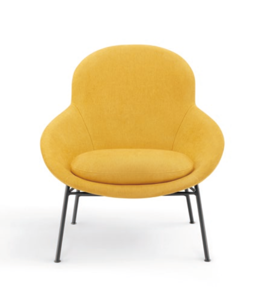

KOKUYO TH
Astrid Lounge Chair
Référence unique · Furniture_Chairs_Stools_Benches_KOKUYO_Astrid_Lounge_Chair
RFASKPDWGFBX
Palette Archicad
Ouvrez cette interface dans Archicad pour lire la sélection et analyser le projet.

KOKUYO TH
Référence unique · Furniture_Chairs_Stools_Benches_KOKUYO_Astrid_Lounge_Chair
Sélection
Aucun objet sélectionné.
Maquette
Aucune donnée de projet reçue.
Comptage par type Archicad
Aucune analyse lancée.
| Type | Quantité | Unité |
|---|
Synchronisation
Aucune API serveur AZUPLIFT n’est configurée à ce stade.